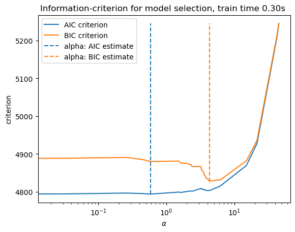
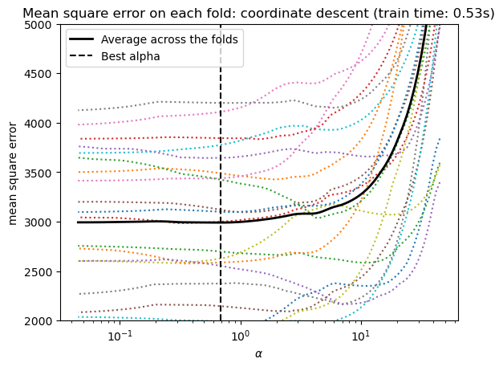
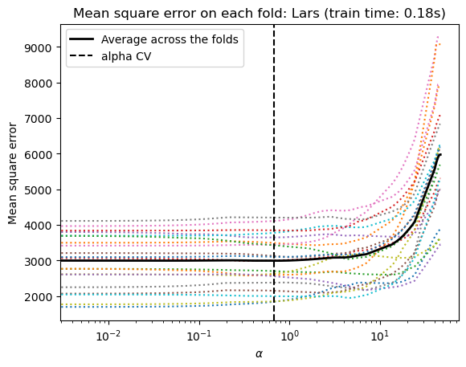

Lasso model selection: AIC-BIC / cross-validation#
This examples foucues on Lasso $\alpha$ strategy. AIC-BIC, CV
Dataset#
from sklearn.datasets import load_diabetes # 糖尿病
X,y = load_diabetes(return_X_y=True, as_frame=True)
X.head()
---------------------------------------------------------------------------
ModuleNotFoundError Traceback (most recent call last)
Cell In[1], line 1
----> 1 from sklearn.datasets import load_diabetes # 糖尿病
2 X,y = load_diabetes(return_X_y=True, as_frame=True)
3 X.head()
ModuleNotFoundError: No module named 'sklearn'
y.head()
0 151.0
1 75.0
2 141.0
3 206.0
4 135.0
Name: target, dtype: float64
In addition, we add some random features to better illustrate the model selection
import numpy as np
import pandas as pd
rng = np.random.RandomState(42)
n_random_features = 14
X_ranom = pd.DataFrame(
rng.randn(X.shape[0], n_random_features),
columns=[ f"random_{i:02d}" for i in range(n_random_features)] #❓f格式化
)
X = pd.concat([X, X_ranom], axis=1)
X
| age | sex | bmi | bp | s1 | s2 | s3 | s4 | s5 | s6 | ... | random_04 | random_05 | random_06 | random_07 | random_08 | random_09 | random_10 | random_11 | random_12 | random_13 | |
|---|---|---|---|---|---|---|---|---|---|---|---|---|---|---|---|---|---|---|---|---|---|
| 0 | 0.038076 | 0.050680 | 0.061696 | 0.021872 | -0.044223 | -0.034821 | -0.043401 | -0.002592 | 0.019907 | -0.017646 | ... | -0.234153 | -0.234137 | 1.579213 | 0.767435 | -0.469474 | 0.542560 | -0.463418 | -0.465730 | 0.241962 | -1.913280 |
| 1 | -0.001882 | -0.044642 | -0.051474 | -0.026328 | -0.008449 | -0.019163 | 0.074412 | -0.039493 | -0.068332 | -0.092204 | ... | -0.908024 | -1.412304 | 1.465649 | -0.225776 | 0.067528 | -1.424748 | -0.544383 | 0.110923 | -1.150994 | 0.375698 |
| 2 | 0.085299 | 0.050680 | 0.044451 | -0.005670 | -0.045599 | -0.034194 | -0.032356 | -0.002592 | 0.002861 | -0.025930 | ... | -0.013497 | -1.057711 | 0.822545 | -1.220844 | 0.208864 | -1.959670 | -1.328186 | 0.196861 | 0.738467 | 0.171368 |
| 3 | -0.089063 | -0.044642 | -0.011595 | -0.036656 | 0.012191 | 0.024991 | -0.036038 | 0.034309 | 0.022688 | -0.009362 | ... | -0.460639 | 1.057122 | 0.343618 | -1.763040 | 0.324084 | -0.385082 | -0.676922 | 0.611676 | 1.031000 | 0.931280 |
| 4 | 0.005383 | -0.044642 | -0.036385 | 0.021872 | 0.003935 | 0.015596 | 0.008142 | -0.002592 | -0.031988 | -0.046641 | ... | -0.479174 | -0.185659 | -1.106335 | -1.196207 | 0.812526 | 1.356240 | -0.072010 | 1.003533 | 0.361636 | -0.645120 |
| ... | ... | ... | ... | ... | ... | ... | ... | ... | ... | ... | ... | ... | ... | ... | ... | ... | ... | ... | ... | ... | ... |
| 437 | 0.041708 | 0.050680 | 0.019662 | 0.059744 | -0.005697 | -0.002566 | -0.028674 | -0.002592 | 0.031193 | 0.007207 | ... | -0.761825 | 0.210367 | 1.530335 | -0.778095 | 1.171810 | 1.498098 | -0.816155 | -1.455055 | 0.301961 | -0.547408 |
| 438 | -0.005515 | 0.050680 | -0.015906 | -0.067642 | 0.049341 | 0.079165 | -0.028674 | 0.034309 | -0.018114 | 0.044485 | ... | 1.089905 | -0.571184 | 0.043829 | 0.955803 | -0.484258 | -0.045929 | -0.016568 | 0.683325 | 0.590744 | -0.220114 |
| 439 | 0.041708 | 0.050680 | -0.015906 | 0.017293 | -0.037344 | -0.013840 | -0.024993 | -0.011080 | -0.046883 | 0.015491 | ... | 1.892192 | -0.883719 | -0.773030 | -0.870728 | 0.724592 | 0.448485 | -0.158538 | -0.918019 | 0.092377 | -1.564622 |
| 440 | -0.045472 | -0.044642 | 0.039062 | 0.001215 | 0.016318 | 0.015283 | -0.028674 | 0.026560 | 0.044529 | -0.025930 | ... | 1.579438 | -0.611760 | 1.135948 | -0.153998 | -0.161955 | 0.438413 | -0.883999 | 0.132497 | -0.381489 | -1.320493 |
| 441 | -0.045472 | -0.044642 | -0.073030 | -0.081413 | 0.083740 | 0.027809 | 0.173816 | -0.039493 | -0.004222 | 0.003064 | ... | 1.591400 | 0.876714 | 0.964156 | -0.305445 | -1.729183 | 1.952917 | -0.061098 | -0.748800 | 0.416802 | 1.167121 |
442 rows × 24 columns
Selecting Lasso via an information criterion : LassoLarsIC#
import time
from sklearn.linear_model import LassoLarsIC
from sklearn.pipeline import make_pipeline
from sklearn.preprocessing import StandardScaler
;❓AIC 和BIC怎么做到产生哪些 alpha??
AIC#
start_time = time.time()
lasso_lars_ic = make_pipeline(
StandardScaler(),
LassoLarsIC(criterion='aic')
).fit(X,y)
fit_time = time.time()-start_time
lasso_lars_ic
Pipeline(steps=[('standardscaler', StandardScaler()),
('lassolarsic', LassoLarsIC())])In a Jupyter environment, please rerun this cell to show the HTML representation or trust the notebook. On GitHub, the HTML representation is unable to render, please try loading this page with nbviewer.org.
Pipeline(steps=[('standardscaler', StandardScaler()),
('lassolarsic', LassoLarsIC())])StandardScaler()
LassoLarsIC()
Stroe the AIC metric for each $\alpha$ value during fit
results = pd.DataFrame(
{
'alphas': lasso_lars_ic[-1].alphas_,
'AIC criterion': lasso_lars_ic[-1].criterion_
}
).set_index('alphas')
alpha_aic = lasso_lars_ic[-1].alpha_
alpha_aic
np.float64(0.5867979213449543)
bic#
lasso_lars_ic.get_params()
{'memory': None,
'steps': [('standardscaler', StandardScaler()),
('lassolarsic', LassoLarsIC())],
'transform_input': None,
'verbose': False,
'standardscaler': StandardScaler(),
'lassolarsic': LassoLarsIC(),
'standardscaler__copy': True,
'standardscaler__with_mean': True,
'standardscaler__with_std': True,
'lassolarsic__copy_X': True,
'lassolarsic__criterion': 'aic',
'lassolarsic__eps': np.float64(2.220446049250313e-16),
'lassolarsic__fit_intercept': True,
'lassolarsic__max_iter': 500,
'lassolarsic__noise_variance': None,
'lassolarsic__positive': False,
'lassolarsic__precompute': 'auto',
'lassolarsic__verbose': False}
lasso_lars_ic.set_params( # 不需要重新定义， 设置参数
lassolarsic__criterion='bic'
).fit(X,y)
results['BIC criterion'] = lasso_lars_ic[-1].criterion_
alpha_bic = lasso_lars_ic[-1].alpha_
alpha_bic
np.float64(4.306012427239533)
we compare AIC/BIC in this df by highlight the min
def highlight_min(x):
x_min = x.min()
return ["font-weight: bold" if v == x_min else "" for v in x]
results.style.apply(highlight_min)
| AIC criterion | BIC criterion | |
|---|---|---|
| alphas | ||
| 45.160030 | 5244.764779 | 5244.764779 |
| 42.300343 | 5208.250639 | 5212.341949 |
| 21.542052 | 4928.018900 | 4936.201520 |
| 15.034077 | 4869.678359 | 4881.952289 |
| 6.189631 | 4815.437362 | 4831.802601 |
| 5.329616 | 4810.423641 | 4830.880191 |
| 4.306012 | 4803.573491 | 4828.121351 |
| 4.124225 | 4804.126502 | 4832.765671 |
| 3.820705 | 4803.621645 | 4836.352124 |
| 3.750389 | 4805.012521 | 4841.834310 |
| 3.570655 | 4805.290075 | 4846.203174 |
| 3.550213 | 4807.075887 | 4852.080295 |
| 3.358295 | 4806.878051 | 4855.973770 |
| 3.259297 | 4807.706026 | 4860.893055 |
| 3.237703 | 4809.440409 | 4866.718747 |
| 2.850031 | 4805.989341 | 4867.358990 |
| 2.384338 | 4801.702266 | 4867.163224 |
| 2.296575 | 4802.594754 | 4872.147022 |
| 2.031555 | 4801.236720 | 4874.880298 |
| 1.618263 | 4798.484109 | 4876.218997 |
| 1.526599 | 4799.543841 | 4881.370039 |
| 0.586798 | 4794.238744 | 4880.156252 |
| 0.445978 | 4795.589715 | 4885.598533 |
| 0.259031 | 4796.966981 | 4891.067109 |
| 0.032179 | 4794.662409 | 4888.762537 |
| 0.019069 | 4794.652739 | 4888.752867 |
| 0.000000 | 4796.626286 | 4894.817724 |
📊 AIC : best $\alpha$ = 0.58;
BIC : best $\alpha$ = 4.3
ax = results.plot()
ax.set_xlabel(r"$\alpha$") #❓
ax.set_ylabel('criterion')
ax.set_xscale('log') # log化X尺度
ax.set_title(
f"Information-criterion for model selection, train time {fit_time:.2f}s "
)
ax.vlines(
alpha_aic, # 垂直线X坐标， 最优alpha
results["AIC criterion"].min(), # y起始
results["AIC criterion"].max(), # y结束
label="alpha: AIC estimate", # 设置标签，自动图例
linestyles="--",
color="tab:blue",
)
ax.vlines(
alpha_bic, # 垂直线X坐标， 最优alpha
results["BIC criterion"].min(), # y起始
results["BIC criterion"].max(), # y结束
label="alpha: BIC estimate", # 设置标签，自动图例
linestyles="--",
color="tab:orange",
)
ax.legend()
<matplotlib.legend.Legend at 0x1febe5e1ee0>

Selecting Lasso via cross-validation#
Lasso estimator can be implemented with different solvers: coordinate descent and least angle regression.
分别对应于 LassoCV 和 LassoLarsCV
Lasso via coordinate descent#
from sklearn.linear_model import LassoCV
start_time = time.time()
model = make_pipeline(
StandardScaler(),
LassoCV(cv=20)
).fit(X,y)
fit_time = time.time() - start_time
# (n_alphas, n_folds) 表示对应每个元素表示对应 α 和 fold 下的（MSE）。
model[-1].mse_path_.shape
(531, 20)
import matplotlib.pyplot as plt
lasso_cv = model[-1]
plt.semilogx(lasso_cv.alphas_, lasso_cv.mse_path_, linestyle=":") # 对X轴进行log变换，y保持线性
plt.plot(
lasso_cv.alphas_,
lasso_cv.mse_path_.mean(axis=-1), # 按行平均
color='black',
label='Average across the folds',
linewidth=2
)
plt.axvline(lasso_cv.alpha_, linestyle='--', color='black', label='Best alpha')
plt.xlabel(r"$\alpha$")
plt.ylabel("mean square error")
plt.legend()
plt.title(
f"Mean square error on each fold: coordinate descent (train time: {fit_time:.2f}s)"
)
plt.ylim(2000,5000)
(2000.0, 5000.0)

Lasso via least angle regression#
from sklearn.linear_model import LassoLarsCV
start_time = time.time()
model = make_pipeline(StandardScaler(), LassoLarsCV(cv=20)).fit(X, y)
fit_time = time.time() - start_time
lasso = model[-1]
plt.semilogx(lasso.cv_alphas_, lasso.mse_path_, ":")
plt.semilogx(
lasso.cv_alphas_,
lasso.mse_path_.mean(axis=-1),
color="black",
label="Average across the folds",
linewidth=2,
)
plt.axvline(lasso.alpha_, linestyle="--", color="black", label="alpha CV")
plt.xlabel(r"$\alpha$")
plt.ylabel("Mean square error")
plt.legend()
_ = plt.title(f"Mean square error on each fold: Lars (train time: {fit_time:.2f}s)")

print(lasso_cv.alpha_, lasso_lars_cv.alpha_)
0.6730881232920619 0.6730881232920619